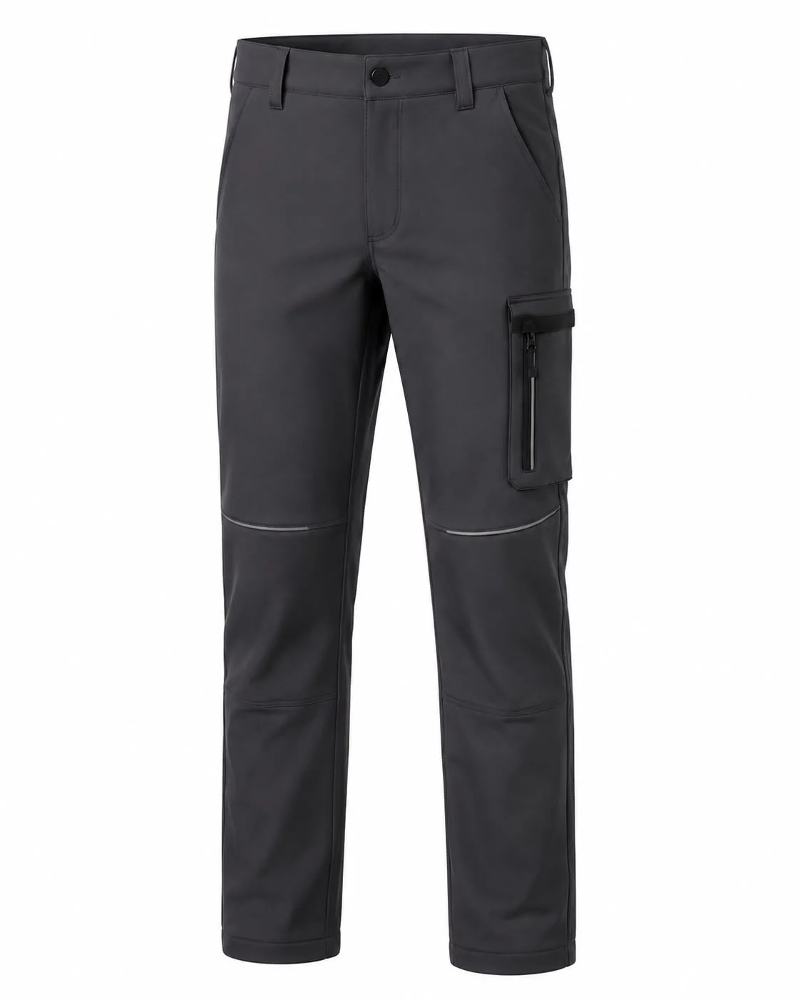

Antrasit Fermuarlı Cepli Softshell Pantolon
Antrasit Fermuarlı Cepli Softshell Pantolon (KT-SS-013): Antrasit | Softshell kumaş | Fermuarlı kargo cebi | Diz formu | Esnek iş pantolonu. Minimum 50 adet özel üretim, kurumsal renk, baskı ve nakış seçenekleri.

Antrasit Fermuarlı Cepli Softshell Pantolon üretim ayrıntıları
Antrasit Fermuarlı Cepli Softshell Pantolon, kurumsal ekiplerde görev işlevi ve düzenli görünümü bir araya getirmek üzere planlanan softshell ürünleri modellerindendir. Antrasit | Softshell kumaş | Fermuarlı kargo cebi | Diz formu | Esnek iş pantolonu özellikleri modelin temel çerçevesini oluşturur.
Malzeme seçimi esnek softshell kumaş üzerinden; çalışma ortamı, vardiya süresi, hareket ve bakım düzeni dikkate alınarak yapılır. Dikiş, cep ve kapama noktaları numunede kontrol edilir.
Logo ölçüsü ve konumu kumaş yüzeyiyle birlikte değerlendirilir. Onaylanan nakış veya baskı uygulaması model koduna bağlanarak tekrar sipariş standardı korunur.
Adet, beden dağılımı, renk, teslimat noktası ve hedef tarih yazılı paylaşıldığında kumaş ve üretim planı netleştirilir. Seri üretim yalnız onaylanan kapsam üzerinden ilerler.
Model özellikleri
- Antrasit
- Softshell kumaş
- Fermuarlı kargo cebi
- Diz formu
- Esnek iş pantolonu
Benzer ürünler
Haki Kapüşonlu Taktik Softshell Mont
KT-SS-014 kodlu kurumsal üretim modelini inceleyin.
Ürün detayına gidin →Antrasit Kapüşonlu Softshell Mont
KT-SS-015 kodlu kurumsal üretim modelini inceleyin.
Ürün detayına gidin →Petrol Antrasit Asimetrik Softshell Mont
KT-SS-016 kodlu kurumsal üretim modelini inceleyin.
Ürün detayına gidin →İlgili seçim ve bakım rehberleri
Softshell Mont Rehberi: Softshell Kumaş Nedir, Özellikleri ve Kullanım Alanları
Kullanım, seçim ve bakım ayrıntılarını inceleyin.
Rehbere gidin →Softshell Kumaş Nedir? Katman Yapısı, Su İticilik ve Kullanım Alanları
Kullanım, seçim ve bakım ayrıntılarını inceleyin.
Rehbere gidin →Softshell İş Kıyafeti Nasıl Yıkanır?
Kullanım, seçim ve bakım ayrıntılarını inceleyin.
Rehbere gidin →Sık sorulan sorular
Minimum sipariş kaç adettir?
Bu modelde özel üretim minimum siparişi 50 adettir.
Logo uygulanabilir mi?
Kumaşa göre nakış, DTF, transfer veya serigrafi uygulanabilir.
Farklı renk üretilebilir mi?
Kumaş ve aksesuar uygunluğuna göre kurumsal renk planlanabilir.
Numune hazırlanabilir mi?
Proje kapsamına göre seri üretim öncesinde numune hazırlanabilir.
Beden dağılımı nasıl belirlenir?
Çalışan listesi ve numune kontrolüyle beden dağılımı yazılı onaya alınır.
Teklif için ne gerekir?
Adet, beden, renk, logo, teslimat şehri ve hedef tarih paylaşılmalıdır.
KT-SS-013 için teklif alın.
Ürün, adet, beden ve logo bilgilerinizi paylaşın.